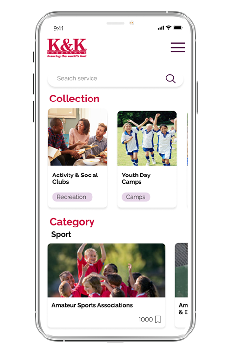
App mobile · 2021
K&K Insurance
Is an Indiana-based insurance company that stands out for its motorsports coverage. It was started in Fort Wayne, Indiana in 1952 to manage and market a benevolent fund for injured race car drivers.
Proposing a modern platform would increase the trust customers have when contracting their security coverage services.
Problem definition
- Lack of consistency in the interface.
- The hiring process is unclear.
- Information is congested and difficult to read.
- The redirection of some pages is confusing.
- Customer satisfaction surveys are not managed.
- No analysis of site visits is conducted.
- It does not inspire trust or security.
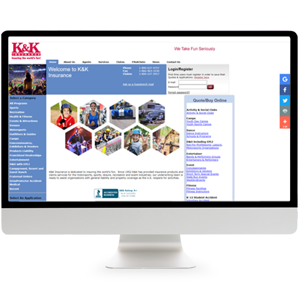
What can be improved?
- Offer individual customer accounts.
- Track and manage statistics.
- Provide support for the contracted coverage.
- Organize the presentation of information.
- Listen to customer concerns.
- Communicate the status of requests.
- Implement customer satisfaction surveys.
How can it be achieved?
- A simple interface.
- The ability for customers to create profiles.
- Clear presentation of services.
- Viewing the status of contracted coverage.
- Offering effective client advice.
- Notifying clients of contract approval or rejection.
- Providing support after contract payment.
- Connecting profiles.
- Evaluating the service.
Why is it necessary?
Archetypes
Tommy
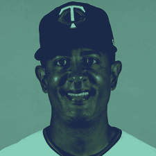
Baseball Coach
He is a 56-year-old trained professional, deeply committed to leadership and protection, with a strong sense of responsibility for developing the young people in his charge.
He trains talent by applying discipline, respect, and often demonstrates firm, objective character, as young people may view him as a father figure.
He is generally responsible for organizing sporting events, and having insurance coverage against accidents is essential for his role.
Lucy
Retired
She is a woman who enjoys organizing recreational activities, such as poker games, book discussions, dance classes, cooking lessons, and crochet.
Outgoing and active, she finds joy in dedicating her time to tasks she could not pursue during her career as an administrator and her responsibilities with family and grandchildren.
Now retired, she focuses on her mental health and well-being. As older adults are more prone to accidents at home, accident insurance during her activities provides peace of mind.
Cloe
Architect
A perfectionist, Cloe loves organized spaces and strives to create balance in her environment. She enjoys planning family trips to spectacular tourist destinations and is highly concerned with safety.
When scheduling a trip, she organizes alternatives to protect her family's well-being from accidents or illnesses.
MVP
- Main login.
- View statuses of contract requests.
- Create the categories and collections section.
- Approval or rejection alerts.
- View user profile.
- Create clubs.
- Online care option.
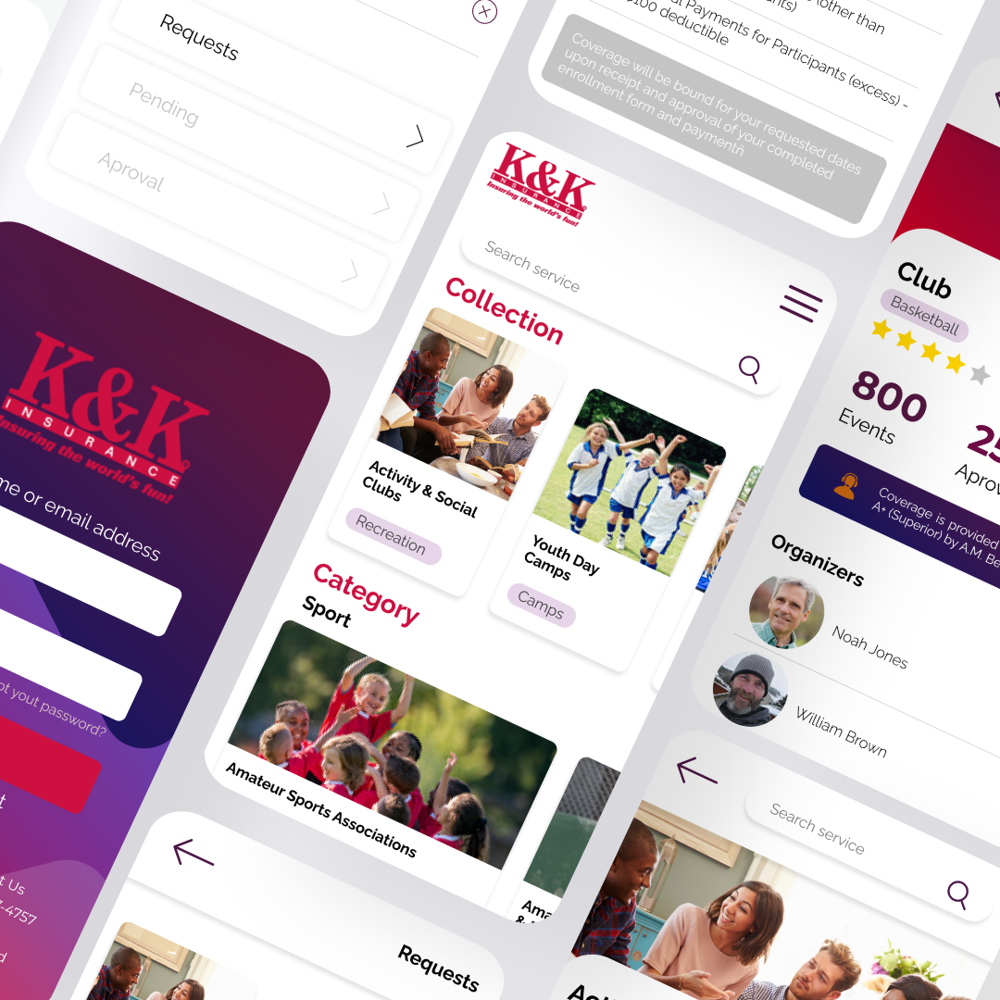
User flow

Sketching
This phase involved generating many ideas for the app’s layout, grid structure, tile usage, and element positioning. The process was subject to modifications based on both the evolving ideas and the user flow.


Wireframes

Prototype
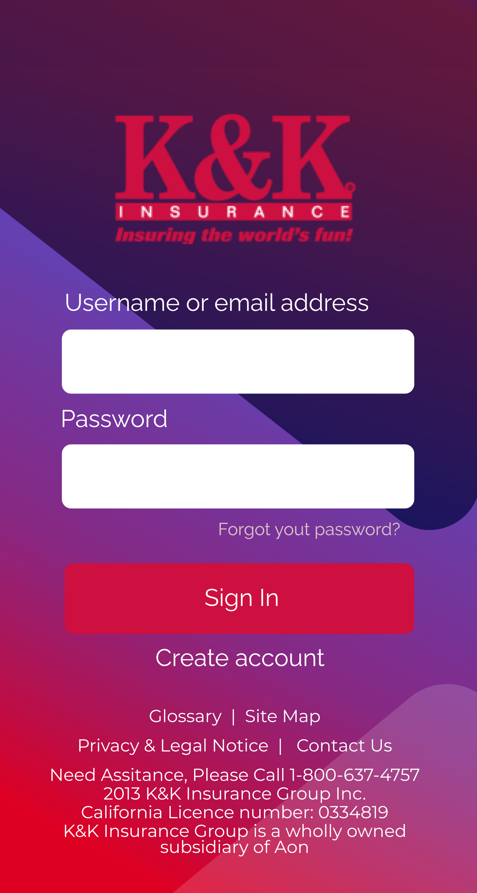
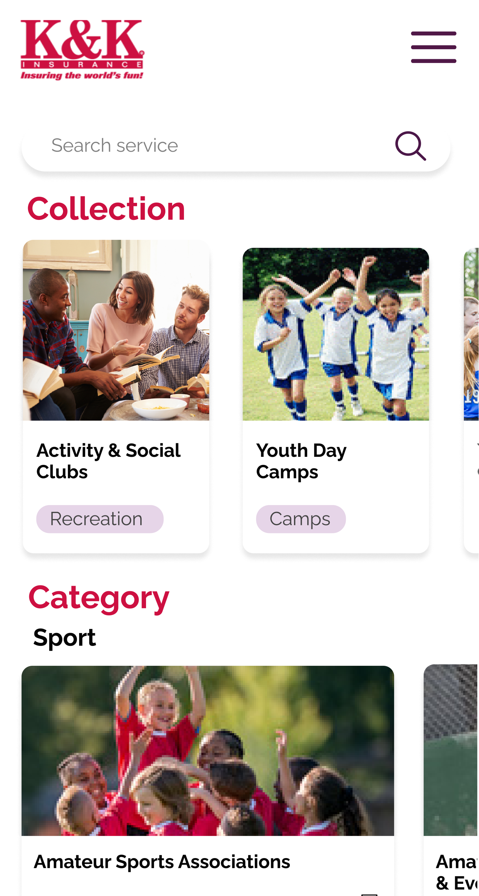
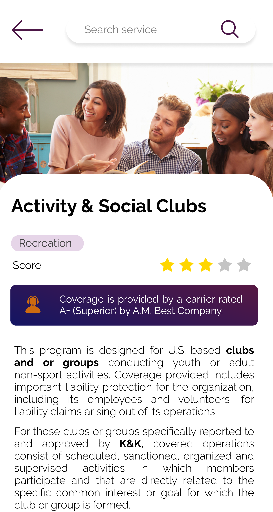
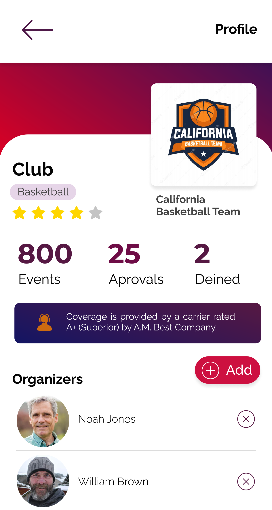
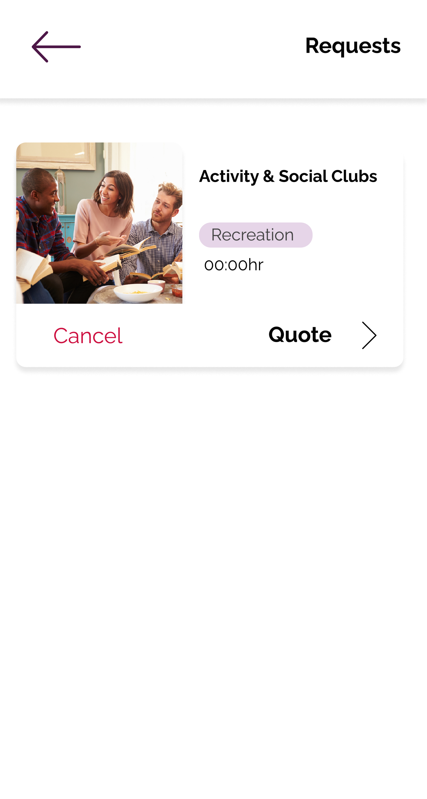
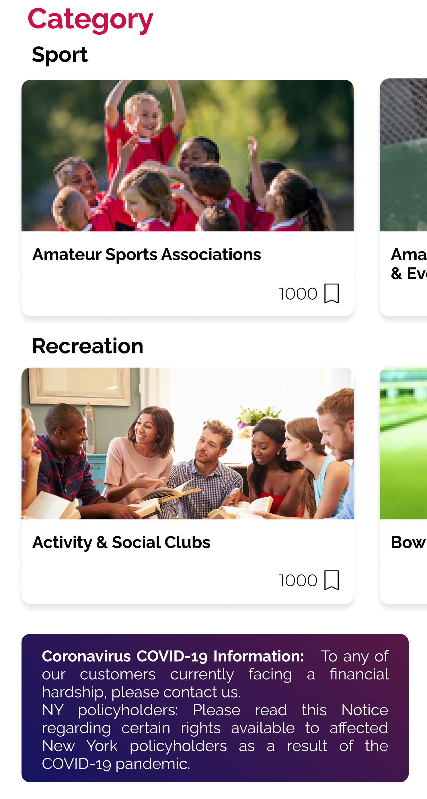
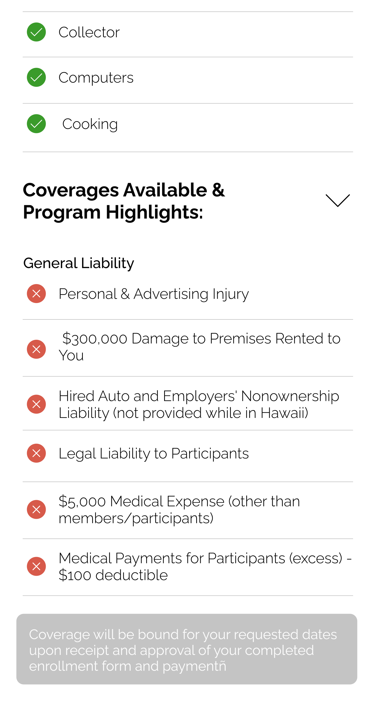
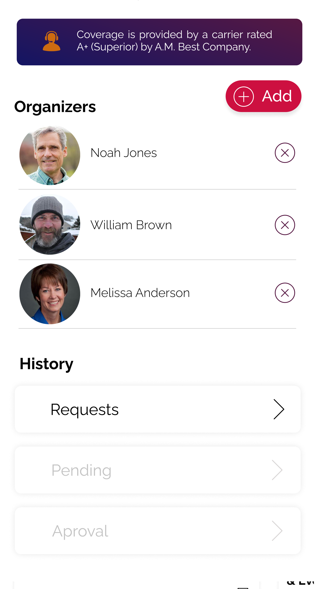
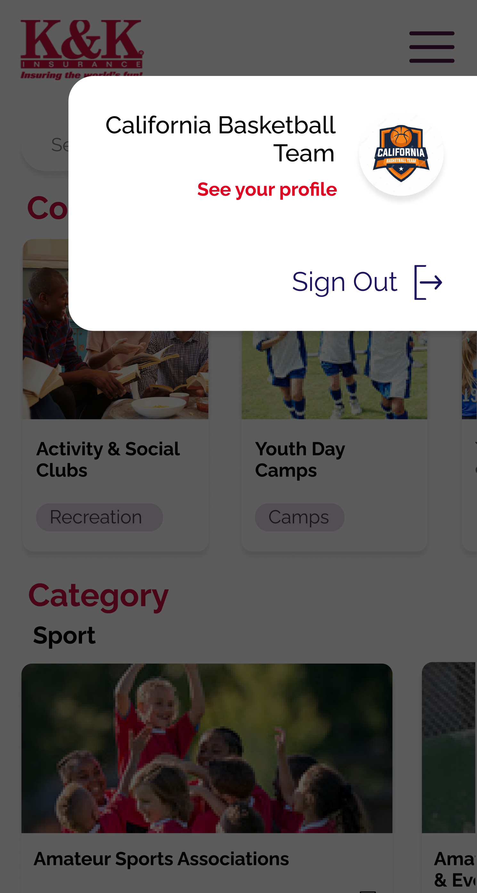
UI Kit
- Buttons
- Cards
- Text-style
- Icons
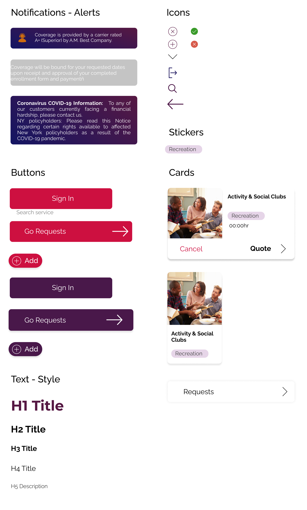